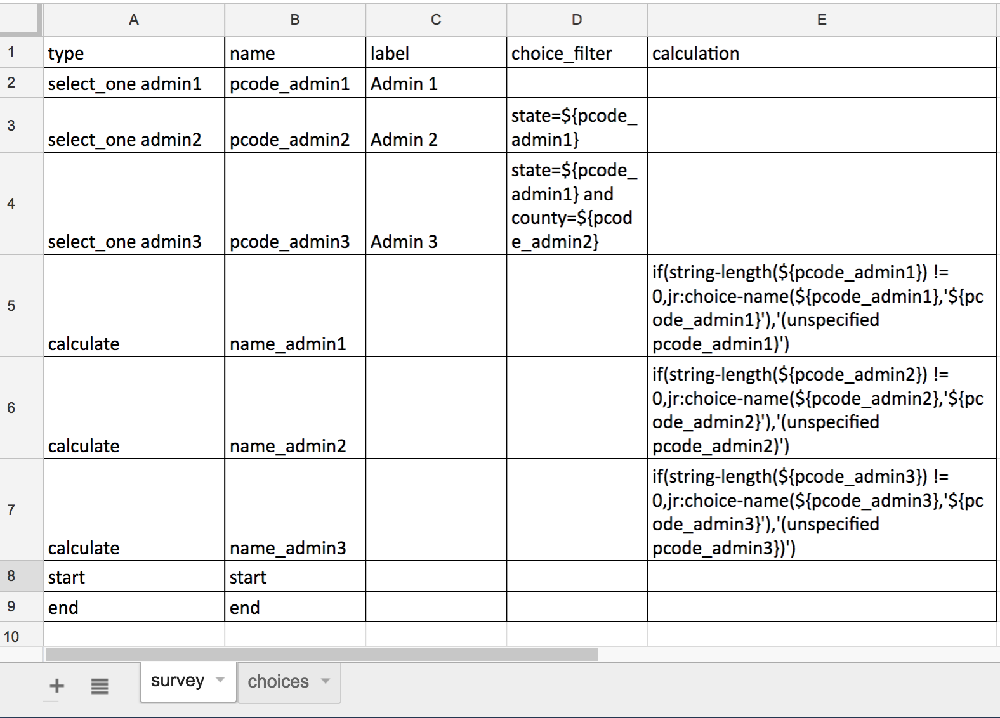

How to Include P-Codes in the Output Data¶
If using cascading lists, please follow the instructions for cascading selects.
Normally, only the “Name” and NOT the “Label” will appear in your exported Excel file, which means that only the P-code OR the name of the location will appear.
In order to get both P-code and name as part of your exported data, do the following:
In all “Name” columns of your exported form, use the P-code of the location
In all “Label’ columns of your exported form, use the name of the location
For each Admin level you use, add a question with type “calculate”, using the syntax:
if(string-length(${name_of_pcode_column}) != 0,jr:choice-name(${name_of_pcode_column},’${name_of_pcode_column}’),’(unspecified name_of_pcode_column)’)
This formula will extract the “Label” (i.e. the name of the location) of the entry, and you will in your exported results get both the name and the p-code.
Example with 3 admin levels, using cascading lists
